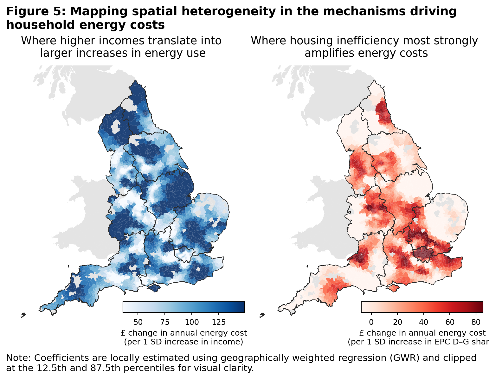
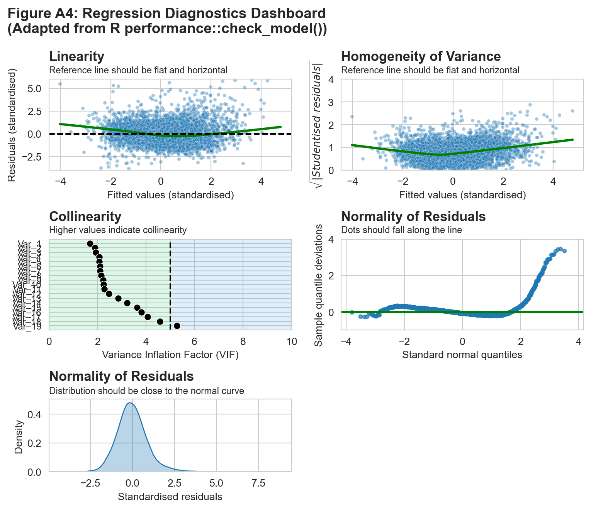

CASA0007 Assessment Submission
England’s energy crisis is no longer about volatility - its about persistence and inequality.
Date: 12 Jan 2026
While headline energy prices have eased since 2022, household energy bills in England remain far above pre-crisis levels. What has emerged is not a short-lived shock, but a sustained financial strain. When high energy costs persist, they begin to shape household finances and regional inequalities. Understanding who is most exposed, and why, is central to designing effective energy policy that goes beyond short-term subsidies.
From shock to persistence
The sharp rise in energy cost in 2022 was driven by global wholesale gas prices and exacerbated by geopolitical shocks1. Since then, wholesale prices have moderated, and the government’s Energy Price Guarantee (EPG) temporarily capped household exposure at the height of the crisis2.
Yet, this has not returned household costs to pre-2021 norms. Latest estimates show that the energy price cap remains around £600 (45%) higher than before the crisis (Figure 1). Moreover, the cap is projected to rise again in the coming quarters3. While volatility has eased, prices have settled at historically high levels.
This persistence places growing pressure on households. Average levels of energy debt and the number of households in arrears have risen sharply since 2021 (Figure 2), suggesting that many have been unable to absorb higher costs through behavioural adjustments or savings alone.

While the impact is most acute for lower-income households, higher energy costs are also squeezing the broad-middle. At least 15% of middle-income households now report struggling to heat their homes adequately4. It is therefore unsurprising that energy costs remain at the top of public concerns. A March 2025 IPSOS UK survey5 found that close to nine in ten respondents (88%) were worried about the price households pay for home energy — a figure unchanged since the height of the crisis (Figure 3).

Exposure to high energy costs is uneven across England
Although household energy prices are nationally regulated, the costs households face are far from uniform leading to unequal outcomes. Average bills depend not only on prices, but on how much energy households consume and how efficiently their homes convert energy into power.
As a result, some households face persistently high energy costs because they live in larger, older or less efficient homes, rely on more expensive heating systems, or have limited scope to reduce consumption. These differences reflect structural characteristics of housing rather than short-term behavioural choices alone.
Figure 4 illustrates this uneven exposure by mapping average household energy costs across England. Higher costs are concentrated across much of the North and Midlands, and parts of the South Coast, while lower average costs are more common in parts of the Southwest and East. There is also substantial variation within regions and cities, indicating that exposure to high energy cost is shaped by local housing conditions and energy use patterns rather than geography alone.
This raises a key question: if prices are broadly similar, why does its impact differ so sharply, and what does that imply for equitable energy policy?

What drives differences in household energy costs?
To explore these drivers, we estimate a multivariate model that relates average household energy costs to building age and energy efficiency, dwelling characteristics, household composition and heating infrastructure, while controlling for regional differences. We aim to identify which structural factors are most strongly associated with persistently high energy costs.
Results are summarised in Table 1. Three findings stand out.
- Housing energy inefficiency is a central driver of high costs. Areas with a higher share of energy-inefficient homes (EPC bands D-G), face significantly higher annual energy costs, even after accounting for income and other housing characteristics. Poor insulation and inefficient heating systems amplify the associated increase of high prices, meaning that households in these homes pay more regardless of their income position. Housing inefficiency does not merely coincide with low incomes; it actively magnifies exposure to high energy prices.
- Housing form and household composition matter. Older and larger dwellings, detached housing and areas with more large households all face higher energy costs, reflecting greater baseline energy needs. These factors help explain why some higher-income areas still experience high absolute cost: higher incomes often coincide with larger, more energy-intensive homes.
- Income shapes households’ capacity to absorb energy costs rather than costs alone. Higher incomes are associated with higher energy consumption and higher costs, but they also provide greater financial resilience. In contrast, areas characterised by lower incomes have far less scope to accommodate rising costs, particularly where poor housing efficiency or heating systems push cost
| Structural factor (MSOA-level) | Modelled change in annual energy cost (per HH) |
|---|---|
| +10pp share of households with 4+ people | ≈ +£170 |
| +10% increase in median floor area of homes | ≈ +£65-75 |
| +10pp share of EPC D–G homes | ≈ +£50–65 |
| +10pp share of detached homes | ≈+£50-60 |
| +10% increase in household income | ≈+£50-55 |
| +10pp share of pre-1945 housing | ≈+£15-20 |
Note: Estimates are based on the preferred OLS specification controlling for housing characteristics, heating mix, urban–rural status and region. Effects are indicative averages and reflect associations rather than causal impact.
These findings explain why financial pressure extends beyond the lowest-income groups. A substantial share of middle-income households report struggling with energy bills not solely because they consume unusually large amounts of energy, but because structural features expose them to persistently high costs. In equity terms, households with similar incomes can face different energy pressures depending on where and how they live.
Why place still matters
Even after accounting for income, housing characteristics and heating systems, some spatial variation in energy costs remains. This reflects localised differences in heating infrastructure, housing stock composition and settlement patterns that shape how households experience nationally regulated energy prices.
Figure 5 shows how the influence of income and energy efficiency vary across England. In some areas, higher incomes are closely associated with higher energy costs, reflecting consumption linked to larger or more energy-intensive homes. In others, income plays a much weaker role. In contrast, the cost penalty associated with poor housing efficiency is uneven, with inefficient homes driving higher cost in some places but less so in others.

Towards more equitable policy outcomes
What does this mean for policy?
Blanket price suppression and universal subsidies are blunt instruments. While they reduce short-term hardship and are politically expedient, they may not address the structural reasons why some households face higher costs than others.
Sustained investment in housing energy efficiency offers an effective long-term responses to high energy costs. Improving insulation and upgrading heating systems directly lowers cost and reduces exposure to future price shocks, particularly where inefficient housing imposes the largest cost penalties.
Income matters for affordability, but place matters for exposure. Relying solely on national income thresholds risks overlooking households who face structurally high energy costs because of where and how they live. Given spatial heterogeneity, more granular, place-sensitive approaches may be needed to ensure support reaches those most exposed.
As energy prices settle at a higher level, the challenge for policymakers is no longer how to smooth volatility, but how to prevent nationally regulated prices from becoming a permanent source of inequality, working towards an energy system that is both efficient and equitable.
Technical Appendix
1. Study Objective
This study examines the structural drivers of domestic energy costs (electricity and gas) at the Middle Layer Super Output Area (MSOA) level in England. First, it identifies how housing characteristics, household composition, and heating systems are associated with variation in average annual household energy costs. Second, it assesses whether these relationships exhibit spatial dependence, indicating that some areas are systematically exposed to higher energy costs even after observable characteristics are controlled for.
The analysis is descriptive and explanatory rather than causal. By focusing on small-area averages, it highlights how nationally regulated energy prices translate into uneven local cost pressures through differences in housing stock, energy efficiency and household structure. The emphasis is on identifying structural sources of exposure and inequity, rather than estimating behavioural responses or causal treatment effects.
2. Data and Assumptions
2.1 Spatial unit analysis and data sources
The analysis is conducted at MSOA level for England. MSOAs offer a balance between spatial resolution and data stability, avoiding the volatility associated with smaller geographies while preserving meaningful spatial variation.
Table 1 summarizes the variables considered and retained in the preferred specification
| Variable | Source | Methodology & assumptions |
|---|---|---|
| Annual electricity consumption (kWh) | DESNZ | MSOA mean domestic electricity consumption per meter (2023) |
| Annual gas consumption (kWh) | DESNZ | MSOA mean domestic gas consumption per meter (2023) |
| Electricity & gas prices | Ofgem | National average price cap values (incl. VAT), Jan–Mar 2024 |
| Annual energy cost (dependent variable) | Author | Electricity + gas consumption × unit prices + standing charges |
| Share of pre-1945 housing | VOA | Proxy for legacy housing inefficiency |
| Share of EPC D–G dwellings | EPC Register | Proxy for poor energy efficiency (2019–2025) |
| Median floor area (log) | EPC Register | Logged to address skewness |
| Median household income (log) | ONS | Logged MSOA income (2023) |
| Share of detached dwellings | Census 2021 | Captures structural heat loss |
| Share of households with 4+ occupants | Census 2021 | Captures household size |
| Heating type shares | Census 2021 | Electric-only, solid/liquid fuels, renewable networks |
| Urban–rural indicator | ONS | Binary classification |
| Region | ONS | Region fixed effects |
We assume that energy prices are nationally regulated and spatially uniform, reflecting Ofgem price caps. Spatial variation in observed energy costs therefore arises from differences in consumption, housing efficiency and heating systems rather than local price-setting.
2.2 Exploratory analysis of data variables
Exploratory analysis (Figure A1) highlights substantial right-skewness in electricity consumption and total energy costs, driven by a subset of MSOAs with high electricity reliance and larger dwellings. As household income is also right-skewed, log-transformation is applied to stabilise variance.
Heating system variables are unevenly distributed across space but retained, as they represent structurally distinct energy systems with implications for electricity demand and exposure to high prices.

Exploratory plots of the dependent variable against key predictors (Figure A2) subsequently inform variable selection and specification.

3. Methodology and Model Specification
3.1 Construction of energy costs
Annual household energy costs are constructed by combining MSOA-level average electricity and gas consumption with national unit prices and standing charges. Electricity and gas costs are calculated separately and summed to obtain total average annual energy cost per household.
3.2 Regression framework
Ordinary Least Squares (OLS) regression is used as the primary modelling framework, due to its transparency and interpretability. Coefficients are interpreted as marginal associations with average annual household energy costs. All models are estimated with heteroscedasticity-robust (HC1) standard errors.
The preferred specification is:
\[ \begin{aligned} \text{EnergyCost}_i = {} & \alpha + \beta_1 \,\text{Pre1945}_i + \beta_2 \,\text{EPC}_{D\text{--}G,i} + \beta_3 \log(\text{FloorArea}_i) \\ & + \beta_4 \log(\text{Income}_i) + \beta_5 \,\text{Detached}_i + \beta_6 \,\text{HH}_{4+,i} \\ & + \beta_7 \,\text{FuelMix}_i + \beta_8 \,\text{Urban}_i + \gamma_r + \varepsilon_i \end{aligned} \]
where i indexes MSOAs and γᵣ denotes region fixed effects.
Variables capture four structural dimensions:
Housing age and efficiency (share pre-1945, share EPC D–G)
Housing scale and form (log floor area, share detached)
Household composition and income (log income, share 4+ households)
Heating infrastructure (fuel mix indicators)
Multicollinearity is assessed using variance inflation factors and remains within accepted thresholds.
4. Regression Findings
Across all specifications, structural housing characteristics and household composition emerge as the dominant drivers of energy costs.
A higher share of EPC D–G dwellings and pre-1945 housing is consistently associated with higher annual energy costs, even after controlling for income and dwelling size.
Larger dwellings and detached housing are strongly associated with higher costs, reflecting greater baseline energy demand.
Household composition plays a particularly important role: MSOAs with a higher share of households containing four or more occupants exhibit substantially higher energy costs.
Fuel mix variables materially improve explanatory power (adjusted \(R^2\)) rising from \(~0.58\) to \(~0.70\). Electric-only heating is associated with significantly higher costs, while solid and liquid fuels are associated with lower average expenditure.
Urban–rural status becomes insignificant once housing and fuel characteristics are controlled for, indicating that observed urban–rural differences primarily reflect housing stock composition.
Region fixed effects marginally improve model fit (final adjusted \(R^2 = 0.74\)) likely capturing some climatic variation and regional housing patterns.
OLS Regression Results
==============================================================================
Dep. Variable: annual_energy_cost R-squared: 0.745
Model: OLS Adj. R-squared: 0.745
Method: Least Squares F-statistic: 605.9
Date: Sat, 27 Dec 2025 Prob (F-statistic): 0.00
Time: 17:54:24 Log-Likelihood: -43596.
No. Observations: 6791 AIC: 8.723e+04
Df Residuals: 6771 BIC: 8.737e+04
Df Model: 19
Covariance Type: HC1
=================================================================================================
coef std err z P>|z| [0.025 0.975]
-------------------------------------------------------------------------------------------------
const -1991.0041 177.240 -11.233 0.000 -2338.387 -1643.621
share_pre1945 160.4093 11.429 14.035 0.000 138.008 182.810
share_epc_DG 485.2044 18.597 26.090 0.000 448.755 521.654
log_median_floor_area 664.2674 42.435 15.654 0.000 581.097 747.438
log_income 482.3145 22.162 21.763 0.000 438.877 525.752
share_detached 606.9683 22.990 26.402 0.000 561.909 652.027
share_hh_4plus 1695.8907 45.159 37.554 0.000 1607.381 1784.400
urban_dummy -35.3910 7.313 -4.840 0.000 -49.724 -21.058
share_electric 585.6890 47.813 12.250 0.000 491.977 679.401
share_solid_liquid -1358.4637 44.788 -30.331 0.000 -1446.247 -1270.680
share_low_central -453.6478 314.565 -1.442 0.149 -1070.184 162.888
share_network_renewable -1027.8246 112.285 -9.154 0.000 -1247.899 -807.751
region_East of England 11.0321 7.778 1.418 0.156 -4.212 26.277
region_London -62.4682 12.890 -4.846 0.000 -87.733 -37.204
region_North East 94.4136 9.057 10.424 0.000 76.662 112.165
region_North West 68.0047 7.288 9.331 0.000 53.720 82.290
region_South East -3.2766 7.670 -0.427 0.669 -18.309 11.756
region_South West -122.9501 6.991 -17.586 0.000 -136.653 -109.247
region_West Midlands 57.1867 6.870 8.324 0.000 43.721 70.652
region_Yorkshire & The Humber 55.4717 7.092 7.822 0.000 41.572 69.372
==============================================================================
Omnibus: 1884.754 Durbin-Watson: 1.270
Prob(Omnibus): 0.000 Jarque-Bera (JB): 10336.188
Skew: 1.220 Prob(JB): 0.00
Kurtosis: 8.530 Cond. No. 720.
==============================================================================
Notes:
[1] Standard Errors are heteroscedasticity robust (HC1)
=================================================================================
Base_model Fuel_Mix Rural/Urban Region_FE
---------------------------------------------------------------------------------
const -1708.679*** -2191.472*** -2134.568*** -1991.004***
(149.537) (172.332) (176.690) (177.240)
share_pre1945 54.063*** 170.840*** 166.743*** 160.409***
(12.978) (11.807) (11.890) (11.429)
share_epc_DG 370.801*** 469.468*** 473.058*** 485.204***
(26.637) (18.778) (18.817) (18.597)
log_median_floor_area 631.269*** 770.978*** 764.410*** 664.267***
(35.813) (39.707) (40.209) (42.435)
log_income 412.632*** 311.856*** 315.012*** 482.314***
(14.647) (13.942) (13.930) (22.162)
share_detached 251.286*** 593.177*** 581.973*** 606.968***
(24.442) (22.842) (22.981) (22.990)
share_hh_4plus 1624.580*** 1499.706*** 1511.621*** 1695.891***
(38.536) (40.416) (40.598) (45.159)
share_electric 499.663*** 499.889*** 585.689***
(46.342) (46.242) (47.813)
share_solid_liquid -1347.187*** -1416.278*** -1358.464***
(44.446) (44.056) (44.788)
share_low_central -1201.691*** -1147.186*** -453.648
(311.190) (310.575) (314.565)
share_network_renewable -1107.573*** -1153.494*** -1027.825***
(105.118) (105.588) (112.285)
urban_dummy -31.495*** -35.391***
(7.782) (7.313)
region_East of England 11.032
(7.778)
region_London -62.468***
(12.890)
region_North East 94.414***
(9.057)
region_North West 68.005***
(7.288)
region_South East -3.277
(7.670)
region_South West -122.950***
(6.991)
region_West Midlands 57.187***
(6.870)
region_Yorkshire & The Humber 55.472***
(7.092)
R-squared 0.572 0.713 0.714 0.745
R-squared Adj. 0.572 0.713 0.714 0.745
N 6791 6791 6791 6791
R² 0.572 0.713 0.714 0.745
=================================================================================
Standard errors in parentheses.
* p<.1, ** p<.05, ***p<.01Residual diagnostics (Figure A4) indicate satisfactory linearity and variance homogeneity, with mild right-skewness driven by a small number of high-electricity-cost MSOAs, driven by a small number of high-cost MSOAs characterised by larger dwellings, higher electricity reliance and limited gas connectivity.

| Variable | VIF | |
|---|---|---|
| 0 | region_North East | 1.686154 |
| 1 | share_epc_DG | 1.902158 |
| 2 | share_hh_4plus | 1.927551 |
| 3 | region_Yorkshire & The Humber | 2.067431 |
| 4 | region_South West | 2.071966 |
| 5 | region_West Midlands | 2.102305 |
| 6 | share_pre1945 | 2.106134 |
| 7 | urban_dummy | 2.147526 |
| 8 | share_electric | 2.224277 |
| 9 | region_East of England | 2.245763 |
| 10 | share_network_renewable | 2.277739 |
| 11 | region_North West | 2.469844 |
| 12 | region_South East | 2.849354 |
| 13 | share_solid_liquid | 3.225414 |
| 14 | share_detached | 3.631050 |
| 15 | log_median_floor_area | 3.815178 |
| 16 | log_income | 4.066691 |
| 17 | share_low_central | 4.577141 |
| 18 | region_London | 5.265254 |
5. Unpacking spatial dependence via Spatial Error Model (SEM) and Geographically Weighted Regression (GWR)
Global Moran’s I tests on OLS residuals reveal significant positive spatial autocorrelation (\(I = 0.43\)), indicating that neighbouring MSOAs share some unobserved characteristics influencing energy costs.
Moran's I value = 0.43 with p = 0.001To account for this, a Spatial Error Model (SEM) was estimated using maximum likelihood. The SEM identifies strong spatial correlation in the error term \((λ ≈ 0.73)\), consistent with omitted spatially structured factors such as housing typologies, retrofit histories or local infrastructure.
REGRESSION RESULTS
------------------
SUMMARY OF OUTPUT: ML SPATIAL ERROR (METHOD = full)
---------------------------------------------------
Data set : unknown
Weights matrix : unknown
Dependent Variable :annual_energy_cost Number of Observations: 6791
Mean dependent var : 2130.8608 Number of Variables : 11
S.D. dependent var : 294.3179 Degrees of Freedom : 6780
Pseudo R-squared : 0.6920
Log likelihood : -42323.4933
Sigma-square ML : 13329.1753 Akaike info criterion : 84668.987
S.E of regression : 115.4520 Schwarz criterion : 84744.043
------------------------------------------------------------------------------------
Variable Coefficient Std.Error z-Statistic Probability
------------------------------------------------------------------------------------
CONSTANT -1796.30377 77.33022 -23.22900 0.00000
share_pre1945 194.45965 10.24099 18.98837 0.00000
share_epc_DG 408.82274 16.59709 24.63219 0.00000
log_median_floor_area 732.10715 19.44254 37.65490 0.00000
log_income 175.13365 17.99068 9.73469 0.00000
share_detached 704.82340 17.02771 41.39273 0.00000
share_hh_4plus 1031.84763 42.01742 24.55761 0.00000
share_electric 550.09246 36.92569 14.89728 0.00000
share_solid_liquid -1108.54704 33.07389 -33.51729 0.00000
share_low_central -747.51343 256.90902 -2.90964 0.00362
share_network_renewable -1183.19779 75.24002 -15.72564 0.00000
lambda 0.73423 0.01009 72.76398 0.00000
------------------------------------------------------------------------------------
Warning: Variable(s) ['const'] removed for being constant.
================================ END OF REPORT =====================================Importantly, coefficient magnitudes and signs remain broadly consistent with OLS results. This suggests that the main findings are robust, while acknowledging that exposure to high energy costs is partially shaped by spatially clustered, unobserved characteristics rather than indicating misspecification of the core structural relationships.
Geographically Weighted Regression (GWR) was further used to explore spatial heterogeneity in coefficients, focusing on income and EPC D–G share. An adaptive bandwidth is selected via AICc.
===========================================================================
Model type Gaussian
Number of observations: 6791
Number of covariates: 7
Global Regression Results
---------------------------------------------------------------------------
Residual sum of squares: 251463249.319
Log-likelihood: -45354.817
AIC: 90723.635
AICc: 90725.656
BIC: 251403391.689
R2: 0.572
Adj. R2: 0.572
Variable Est. SE t(Est/SE) p-value
------------------------------- ---------- ---------- ---------- ----------
X0 2130.861 2.336 912.069 0.000
X1 12.273 3.159 3.885 0.000
X2 47.948 3.009 15.933 0.000
X3 95.718 3.720 25.732 0.000
X4 79.856 2.638 30.270 0.000
X5 45.824 3.832 11.958 0.000
X6 106.246 2.504 42.432 0.000
Geographically Weighted Regression (GWR) Results
---------------------------------------------------------------------------
Spatial kernel: Adaptive bisquare
Bandwidth used: 150.000
Diagnostic information
---------------------------------------------------------------------------
Residual sum of squares: 66737182.197
Effective number of parameters (trace(S)): 781.589
Degree of freedom (n - trace(S)): 6009.411
Sigma estimate: 105.382
Log-likelihood: -40850.569
AIC: 83266.316
AICc: 83470.474
BIC: 88606.198
R2: 0.887
Adjusted R2: 0.872
Adj. alpha (95%): 0.000
Adj. critical t value (95%): 3.512
Summary Statistics For GWR Parameter Estimates
---------------------------------------------------------------------------
Variable Mean STD Min Median Max
-------------------- ---------- ---------- ---------- ---------- ----------
X0 2207.978 220.538 750.347 2174.820 4028.941
X1 25.620 29.360 -112.746 27.736 145.976
X2 41.445 49.019 -86.375 37.515 247.654
X3 55.842 55.332 -89.084 51.246 300.521
X4 89.186 51.328 -132.501 83.049 368.157
X5 148.396 192.089 -973.502 106.330 1634.113
X6 69.078 45.897 -123.661 70.263 229.571
===========================================================================
NoneResults show substantial spatial variation:
In some areas, income is strongly associated with higher energy costs, reflecting consumption-driven demand
In others, the EPC D–G coefficient dominates, indicating that poor housing efficiency imposes high costs regardless of income.
GWR substantially improves model fit (\(R^2 > 0.88\)), but is interpreted as exploratory, highlighting where mechanisms differ rather than replacing global estimates. The high \(R^2\) reflects local overfitting inherent to GWR and should not be interpreted as superior explanatory power relative to the global model.”
6. Reflections and Limitations
This analysis is subject to several limitations. As an ecological study, it cannot capture within-area household heterogeneity or behavioural responses such as under-heating. Prices are assumed spatially uniform, and retrofit history is not directly observed.
Residual spatial clustering reflects genuine structural heterogeneity rather than model failure. From an equity perspective, the results underline that exposure to high energy costs is shaped by place-specific housing conditions, not income alone. This reinforces the need for policy approaches that integrate housing efficiency and local context alongside income-based support.
References
Footnotes
Russia-Ukraine War (https://commonslibrary.parliament.uk/research-briefings/cbp-9714/)↩︎
In Sep 22, then-Prime Minister Elizabeth Truss announced the implementation of an Energy Price Guarantee (EPG) which meant that a typical UK household would pay up to £2,500 a year on their energy bill for the next two years. https://www.gov.uk/government/news/government-announces-energy-price-guarantee-for-families-and-businesses-while-urgently-taking-action-to-reform-broken-energy-market↩︎
Cornwall insights forecasts that the price cap for energy bills is expected to rise by 3.2% in 2Q26, to take into account increases in network costs for electricity. https://www.cornwall-insight.com/press-and-media/press-release/bills-remain-stable-but-new-forecast-signals-increases-in-april/↩︎
Analysis by Joseph Rowntree Foundation using data from Family Resources Survey 2023/2024, Department for Work and Pensions. https://www.jrf.org.uk/cost-of-living/energy-affordability-how-to-reduce-bills-for-majority-of-households↩︎
https://www.ipsos.com/en-uk/almost-nine-ten-britons-are-concerned-about-energy-prices↩︎